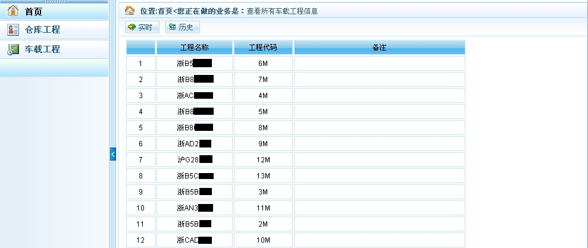
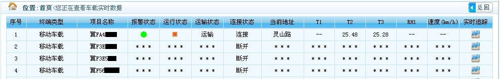
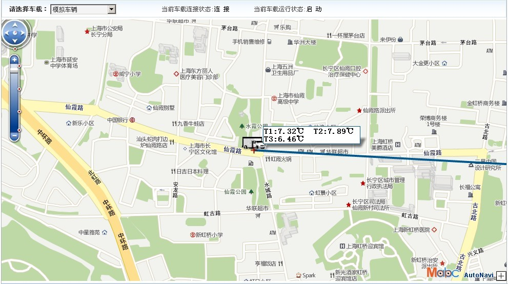

- 1、查询当前登录用户所在企业，所有车载工程的实时数据情况。其中包括车载工程的实时地图功能。
- 1、用户点击左侧的"车载工程",右侧会显示车载的所有功能按钮和所有车载工程的信息列表，功能按钮分别是实时、历史。

2、用户点击"实时"按钮，进入车载工程的实时数据查看页面。

3、在车载工程的实时数据查看页面(上图)中，列表最后一列"实时追踪"有一小图标，即为车载工程实时地图功能。点击对应车载的实时追踪一列的小图标，进入车载实时地图页面。
注:只有连接状态下的车载才能进入实时地图功能页面。
